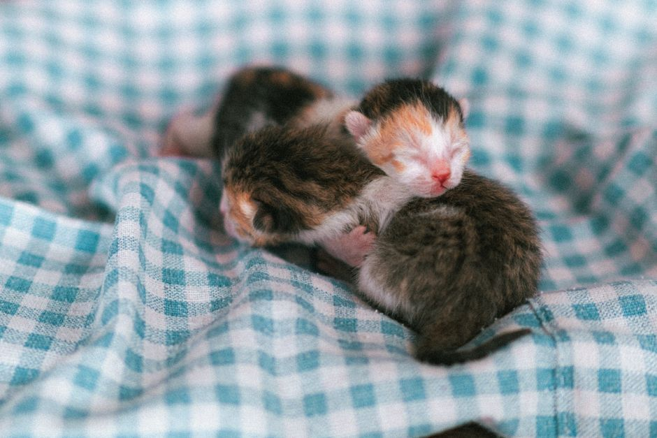

Preparing Your Home for a New Puppy or Kitten

Photo: Duy Nod / Pexels
Decluttering and Childproofing

Photo: Duy Nod / Pexels
Before bringing your new furry friend home, start by decluttering areas where they will spend most of their time. Remove any small, fragile, or potentially harmful objects from shelves, tables, and other surfaces they might reach. Make sure to secure any heavy furniture to the wall to prevent tipping. Securely store medications, cleaning supplies, and other chemicals out of reach.
Pet-Proofing the Fridge and Pantry

Photo: Duy Nod / Pexels
Take a moment to pet-proof your kitchen. Ensure that your trash can is tightly sealed, and keep food, treats, and other items in containers with secure lids. Avoid keeping any human food that could be toxic to pets, such as chocolate, grapes, and onions.
Installing a Pet Door
If you plan on letting your pet go outside, consider installing a pet door. This will give them access to the outdoors without the risk of them wandering off. Choose a pet door that is secure and easy for your pet to open.
Setting Up a Comfortable Sleeping Area
Create a cozy sleeping area for your pet. Use a pet bed or a soft blanket in a quiet, low-traffic area of your home. If your pet is a puppy, they may need to be house-trained, so consider placing their bed in a spot that is easy for you to clean. For kittens, a warm, soft bed in a safe area is ideal.
Establishing a Bathroom Routine
Puppies and kittens need to go outside to use the bathroom frequently. Set up a routine where you can take them out at regular intervals, such as after meals or when they wake up. For indoor training, get a puppy pad or a litter box, depending on your pet. Make sure to keep these areas clean and hygienic.
Organizing Pet Supplies
Before your pet arrives, organize all pet supplies. This includes food, toys, grooming tools, and medical supplies. Keep them in an easily accessible location. Make sure to have a first-aid kit ready with essentials like bandages, antiseptic wipes, and a thermometer.
Decluttering Pet-Safe Areas
Create specific pet-safe areas in your home. For example, if you have a living room that is off-limits to your pet, ensure that it is free of hazards. Use baby gates to create barriers if necessary. This will help keep your pet safe and prevent them from accidentally knocking over breakable items.
Setting Up a Safe Play Area
For young pets, especially kittens, setting up a safe play area is crucial. Use baby gates to create a designated play area where your pet can explore without risking injury. Place toys, scratching posts, and other items in this area to encourage play and exploration.
Organizing Your Schedule
Finally, prepare your schedule to accommodate your new pet. Set a routine for feeding, playtime, and cleaning. Consistency will help your pet adjust to their new home and feel secure.
By following these practical steps, you can ensure that your home is safe and welcoming for your new puppy or kitten. A little preparation goes a long way in ensuring a smooth transition for both you and your new furry friend.
Recommended products
As an Amazon Associate, I earn from qualifying purchases.